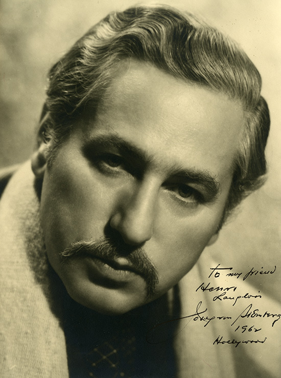
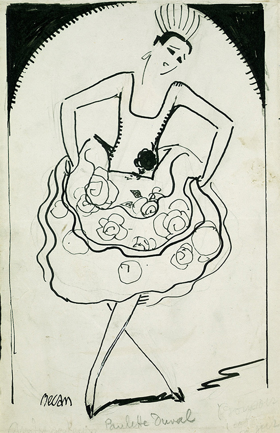
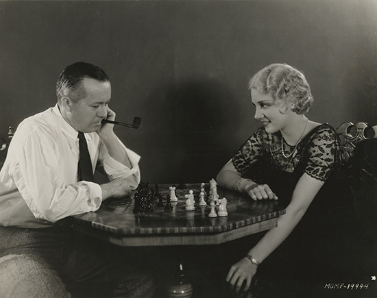
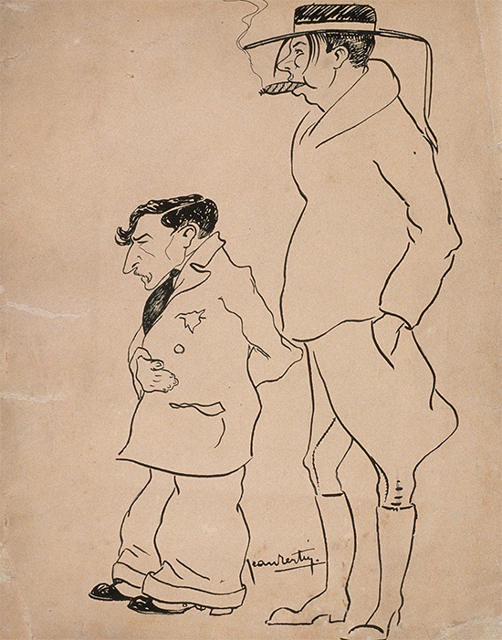

<!DOCTYPE html>
<html lang="fr">
  <head>
    <meta charset="UTF-8" />
    <meta http-equiv="X-UA-Compatible" content="IE=Edge">
    <meta name="viewport" content="width=device-width, initial-scale=1">
    <link rel="stylesheet" href="http://fonts.googleapis.com/css?family=Source+Sans+Pro:400,400italic,600,600italic">
    <link rel="stylesheet" href="src/css/perfect-scrollbar-custom.css">
    <link rel="stylesheet" href="https://cdnjs.cloudflare.com/ajax/libs/font-awesome/4.6.3/css/font-awesome.min.css">
    <link rel="stylesheet" href="src/css/main.css">

    <link rel="stylesheet" href="https://cdnjs.cloudflare.com/ajax/libs/animate.css/3.5.2/animate.min.css">
    <title>Exquisite Sinner - La Cinémathèque française</title>
  </head>
  <body>
    <div class="container">
      <svg viewBox="0 0 2000 1566">
  
        <path id="shape1" class="shape"
          data-pos="35"
          data-info="<p>D'origine autrichienne, <span class='name'>Josef&nbsp;von&nbsp;Sternberg</span> (1894-1969) s'intéresse très jeune au cinéma et travaille dans des laboratoires et studios new-yorkais, où il apprend le montage. Venu à la réalisation grâce au français Émile Chautard qui le choisit pour être son assistant en 1918, et après un premier film indépendant très remarqué, <em>The Salvation Hunters</em> (1925), Sternberg connaît des débuts difficiles avec deux longs métrages muets inachevés à la MGM et un troisième échec produit par Chaplin. À la sortie d'<em>Underworld</em>, il devient l'homme dont on parle le plus à Hollywood où il produira une oeuvre muette et parlante digne d'un esthète dans un climat souvent orageux avec les studios. Après un passage à Berlin où il révèle Marlene Dietrich dans le mythique <em>Blaue Engel</em> (<em>L'Ange bleu</em>), il la dirige encore sur six films Paramount qui marqueront son heure de gloire. Il considère dans ses mémoires avoir «&nbsp;cessé de faire du cinéma en 1935&nbsp;», année de son <em>Crime and Punishment</em>. Au creux de la vague, il tourne entre autres un film médiocre pour la MGM (<em>Sergeant Madden</em>, 1939), après un ambitieux projet inachevé (<em>I, Claudius</em>, 1937), et termine des films signés par d'autres. Mais il réalise néanmoins encore <em>Shanghai Gesture</em> (1941), <em>Jet Pilot</em> (1949), <em>Macao</em> (1950) et <em>Anatahan</em> (<em>Fièvre sur Anatahan</em>, 1954). Écrit, photographié et mis en scène par ses soins, ce dernier opus s'avère un échec financier bien que tourné, selon lui, dans des conditions idéales. Entre 1959 et 1963, Sternberg enseigne le cinéma à l'University of California de Los Angeles puis se consacre à la rédaction de ses mémoires.</p><div class='caption'>Portrait de Josef von Sternberg dédicacé à Henri Langlois</div>"
          d="M1124.15 765.06c10.75-0.84 23.13 4.56 31.79 10.43 5.58 3.78 10.56 8.72 13.47 14.87 0.25 3.54-1.96 3.27 0.73 7.06 -0.54-0.76-1-1.56-1.51-2.34 8.83 13.47 20.88 33.58 20.88 50.71 0 2.77 9.37 4.4 11.83 5.88 4.19 2.51 5.03 6.93 9.12 9.29 6.14 3.53 3.74 7.23 5.56 12.77 1.76 5.37 10.72 4.05 7.74 11.79 -1.52 3.94 2.9 12.68 6.49 14.56 7.07 3.69 7.47 10.27 7.64 17.05 0.13 5.41 2.68 4.72 6.45 8.37 5.28 5.12 5.76 14.19 9.58 19.5 3.78 5.26 7.51 9.66 9.8 15.99 0.97 2.69-0.62 10 1.57 11.08 4.99 2.44 7.21 9.37 7.21 14.6 0 9.06 2.92 5.26 8.83 11.67 12.67 13.72 12.33 25.67 10.83 43.42 -0.6 7.05-4.16 13.47-4.16 20.25 0 4.25-6.07 6.23-6.21 10.57 -0.65 19.26 1.41 39.88 3.73 59.01 2.37 19.54 5.27 38.81 6.24 58.48 0.69 14.08 4.38 27.97 4.64 42.1 0.63 34.32 3.03 68.33 6.19 102.51 1.49 16.11 0.71 32.56 1.43 48.74 0.41 9.08 0.85 18.16 1.31 27.24 0.13 2.59-5.83 1.14-7.46 0.97 -1.75-0.18-0.95-4.09-0.97-5.56 -0.63-33.22-2.97-65.86-4.7-98.93 -0.81-15.6-1.26-31.11-1.7-46.73 -0.51-18.16-3.49-35.45-4.84-53.4 -0.89-11.86 0.12-24.1-2.16-35.85 -2.49-12.89-7.44-25.57-8.07-38.75 -0.5-10.48-0.93-21.14-0.93-31.62 0-5.81-1.92-12.08-2.86-17.81 -0.69-4.18-5.17-7.07-5.17-1.3 0 3.3-10.83-2.91-11.52-2.12 -3.11 3.58-9.53-11.96-10.12-13.37 -2.53-6.07-2.76-14.81-4.33-21.41 -0.65-2.73-0.01-5.98-1-8.59 -0.8-2.09-3.56-2.96-4.65-4.8 -1.69-2.84 0.24-5.58-0.33-8.33 -0.48-2.32-4.58-5.59-6.04-7.39 -4.66-5.76-2.1-14.79-7.02-20.05 -5.3-5.67-1.42-12.03-5.62-17.18 -3.06-3.75-6.12-7.51-9.17-11.27 1.43 18.83 6.24 35.32 11.05 53.51 2.69 10.18 5.11 19.77 6.19 30.23 0.98 9.47-0.1 22.48 3.1 31.45 13.6 38.11 14.13 81.05 16.33 121.36 0.54 9.88 0.33 19.43 0.33 29.2 0 10.45 3.05 20.69-9.95 23.17 -10.01 1.91-20.26 2.83-30.39 3.93 -8.15 0.88-13.58-1.25-15.71 6.88 -4.64 17.8-10.42 33.86-13.33 52.2 -1.67 10.5-6.62 21.78-9.74 32.02 -1.19 3.91-9.98 14.26-9.55 17.26 0.76 5.34 0.11 10.85 0.83 15.97 1.23 8.74-44.38 8.1-46.62 7.21 1.05 0.42 1.61-12.5 1.46-13.84 -0.31-2.77 0.73-10.32 2.33-13 2.03-3.38-0.93-8.97-2.04-13.17 -2.12-7.99 0.61-17.62 2.49-25.49 4.57-19.07 22.99-37.99 16.79-57.59 -0.86-2.73-19.87-2.87-23.19-3.34 -4.41-0.62-3.1-5.39-6.5-6.09 -4.59-0.95-11.96 0.15-15.89-2.65 -2.31-1.65-10.23-17.36-14.34-14.54 -3.9 2.68-7.86 7.53-12.56 4.43 -4.54-3-10.87-4.16-15.77-6.89 -7.03-3.93-12.27-7.53-7.17-16.21 6.96-11.83 1.77-25.92 3.44-39.3 1.87-14.97 9.99-33.86 6.65-48.58 -2.06-9.05-5.66-16.84-6.92-26.25 -2.07-15.5-2.55-30.63-5.82-46.08 -1.37-6.45-0.77-4.68-6.52-6.44 -2.23-0.68-5.23-2.72-4.42-4.58 2.96-6.73 10.83-10.97 13.95-18.94 3.12-7.97 5.05-25.3 5.7-31.26 0.42-3.83 5.49-13.28-1.06-19.01 -8.9-7.79-18.74-12.4-26.71-16.9 -7.55-4.26-12.59-8.2-21.12-8.31 0.55-0.04 1.28-0.21 1.8-0.11 -8.08-1.62-25.14 1.03-28.47-9.06 -1.14-3.47 2.02-13.31 2.77-16.84 1.56-7.39 3.41-15.19 6.67-21.89 1.94-3.97 9.74-5.89 13.57-8.62 5.2-3.72 8.13-6.71 12.6-11 2.28-2.19 14.23-3.09 8.59-9.09 -2.81-2.98 13.1-7.45 13.8-10.25 1.15-4.6 1.14-7.42 6.88-10.49 6.15-3.29 11.79-5.52 14.32-12.41 5.21-14.2 9.14-30.09 20.14-41.09 2.64-2.64 9.12-5.74 10.67-9 1.97-4.15-0.84-6.38 2.75-9.86C1090.65 775.62 1106.47 766.44 1124.15 765.06z"/>

        <path id="shape2" class="shape"
          data-pos="35"
          data-info="<p>Née à Buenos Aires et élevée à Paris, <span class='name'>Paulette&nbsp;Duval</span> (1900-1951) fait ses débuts d'actrice dans <em>Marthe</em> (Gaston Roudès, 1919), où elle tient le rôle titre. Également danseuse, elle rejoint la revue <em>Scandals</em> de George White en 1919, puis la troupe des Ziegfeld Follies à New York. En 1922, elle s'installe à Hollywood et interprète l'impératrice romaine Poppée dans <em>Nero</em> (James Gordon Edwards), tourné en Italie pour la Fox. Elle fait mouche en Madame de Pompadour dans <em>Monsieur Beaucaire</em> (1924) aux côtés de Rudolph Valentino et Bebe Daniels, et apparaît non créditée dans <em>He Who Gets Slapped</em> (<em>Larmes de clown</em>, Victor Sjöström, 1924). Frank Borzage la dirige dans <em>The Lady</em> (<em>Sa vie</em>, 1925) avec Norma Talmadge, à qui elle aurait offert un bijou de tête à 5&thinsp;000&nbsp;US$. Sa garde-robe personnelle, ramenée de Paris, figure dans <em>Cheaper to Marry</em> (<em>Les Deux méthodes</em>, Robert Z. Leonard, 1925), où elle incarne une vamp à la française avec Conrad Nagel. La petite Française aurait aussi introduit à Hollywood le manchon de fourrure, version longue, en 1926, dessinant elle-même un modèle créé par le fourreur Maurice Gebber en zibeline russe. Créditée sur une bonne vingtaine de films, « Miss Duval » décroche des seconds rôles importants, souvent de Françaises, comme dans <em>Time, the Comedian</em> (<em>Le Grand destructeur</em>, Robert Z. Leonard, 1925), <em>Man and Maid</em> (Victor Schertzinger, 1925), <em>Sporting Life</em> (<em>Beau joueur</em>, Maurice Tourneur, 1925), <em>Exquisite Sinner</em> (Josef von Sternberg, 1925) et <em>Blarney</em> (Marcel De Sano, 1926), tous trois avec Renée Adorée, ou <em>Alias the Lone Wolf</em> (Edward H. Griffith, 1927). Elle tourne encore aux côtés de Laura La Plante (<em>Beware of Widows</em>, Wesley Ruggles, 1927), Marion Davies (<em>Beverly of Graustark</em>, Sidney Franklin, 1926), John Gilbert et Joan Crawford (<em>Twelve Miles Out</em> / <em>Le Bateau ivre</em>, Jack Conway, 1927), Constance Talmadge et Alice White (<em>Breakfast at Sunrise</em>, Malcolm St. Clair, 1927), Greta Garbo (<em>The Divine Woman</em>, Victor Sjöström, 1928) ou Dolores del Rio (<em>No Other Woman</em>, Lou Tellegen, 1928). En 1928, lassée des seconds rôles et déçue par Hollywood, elle met fin à sa carrière et rentre en France. En 1933, elle y tourne un dernier film, à nouveau sous la direction de Maurice Tourneur, <em>Lidoire</em>, court métrage avec Fernandel.</p><div class='caption'>Portrait de Paulette Duval par Bernard Becan réalisé à l'encre et à la mine de graphite, publié dans <em>Cinéa</em>, n°&nbsp;61-62 du 7 juillet 1922</div>"
          d="M815.08 776.02c8.69 0.26 16.52 2.19 24.29 6.23 3.58 1.86 3.75 0.87 7.38-1.06 3.96-2.11 5.5-0.69 8.63 3 3.49 4.12 8.28 8.27 9.88 13.38 3.88 12.38-3.38 11.07-2.12 15.63 1.82 16.5-2.92 12.6-6.15 20.78 7.28-0.33 8 8.57 14.38 9.3 -2.56-7.54 16.3-11.64 25.35-4.66 7.93 6.12 19.95 2.14 29.6 4.55 7.71 2.34 12.09 3.83 15.69 6.84 2.76 2.31 1.4 9.01 3.75 11.88 3.63 4.43 17.2 7.39 22.5 10.25 7.54 4.08 27.5 24.48 27.5 24.48s-9.11 5.79-16.62 10.15c-5.74 3.33-7.41 12.91-9.87 20.2 -1.62 9.06-5.12 17.43-1.83 24.87 16.47 6.14 12.41 4.47 21.73 5.05 -0.7 13.1-4.62 23.04-5.27 36.14 -0.31 6.2-3.44 3.56-6.73 8.45 -2.42 3.59-7.11 8.8-8.22 13.01 -1.02 3.9-3.48 12.09 0.94 13.85 2.13 0.85 5.64 5.86 5.64-1.94 0-3.38-2.42-7.13-2.69-10.8 -0.16-2.23 5.22-9.97 7.36-7.65 1.9 2.06-0.22 13.02-0.31 15.41 -0.37 9.83-0.74 19.66-1.12 29.49 -0.45 11.81-1.22 23.45-2.21 35.23 -1.16 13.77-2.33 27.53-3.43 41.31 -0.62 7.78-1.61 15.62-1.93 23.42 -0.12 2.85-1.02 8.56 1.04 10.65 1.52 1.54 7.51 2.62 14.05 8.13 3.61 3.04 6.71-23.47 8.06-28.23 13.17 3.61 16.99 9.76 18.6 22.98 1.01 8.32-2.6 31.38-8.24 38.05 -10.14 11.98-17.27 23.14-34.11 23.14 -3.04 0-7.4-1.75-9.9 0.29 -3.83 3.13-6.62 8.56-12.24 7.9 -11.77-1.39-20.34 4.37-26.84-7.83 -8.69-16.32-29-34.28-26.09-53.85 1.51-10.14 10.29-19.33 7.33-30.18 -0.55-2.02-10.41-6.01-12.48-7.67 -4.69-3.75-1.88-11.63-10.27-12.75 -5.49-0.73-6.92-2.05-6.92 4.58 0 5.57-1.3 11.22-2.26 16.69 -2.19 12.58-5.13 24.4-7.04 36.68 -1.39 8.97 1.14 17.29 1.31 26.2 0.09 4.85 2.54 7.07 0.77 11.63 -0.52 1.35 1.38 4.1 1.38 5.65 0 4.61-0.87 8.67-1.17 13.17 -0.62 9.26-20.8 8.81-27.92 7.86 -3.65-0.49-6.89-8.53-5.25-12.36 1.61-3.76 6.53-8.87 3.83-13.25 -2.82-4.57 0.72-7.23 0.88-12.31 0.2-6.69 3.3-11.91 3.89-18.63 0.75-8.51-0.84-27.76-8.85-31.6 -11.35-5.45-19.67 9.67-31.42 2.63 -12.7-7.62-7.11-16.06-6.06-28.3 0.3-3.52 1.59-10.07 0.56-13.38 -0.74-2.39-6.83-6.63-6.83-7.5 0-9.02-6.4-22.01-4.17-30.19 3.6-13.18 3.23-36.03 1.93-47.68 -0.6-5.41-5.87-9.74-6.34-15.96 -0.28-3.75 0.6-6.7 2.57-9.85 0.88-1.4 8.25-6.54 8.33-7.33 1-10.06 0.9-19.54 0.95-29.6 0.05-8.67 1.56-12.94 1.63-20.8 0.01-1.26-1-5.83-1.47-7 -1.23-3.06-4.16-2.9-4.26-6.75 -0.05-1.86 0.91-6.09-1.36-6.16 -5.66-0.17-3.41-6.32-3.5-11.39 -0.19-10.59-0.38-21.18-0.58-31.77 -0.31-17.13-0.62-34.25-0.93-51.38 0.42 9.36 5.11 3.11 8.16-0.37 6.1-6.94 3.95-15.11 2.8-24.45C791.19 797.62 798.41 775.16 815.08 776.02z"/>

        <path id="shape3" class="shape"
          data-pos="25"
          data-info="<p>Après des débuts de script boy pour le studio Triangle de Culver City en 1917, Harry A. Grinde (1893-1979), crédité <span class='name'>Nick&nbsp;Grinde</span> (ou plus rarement Nick Grindé), sera assistant réalisateur pendant plusieurs années. Il met en scène ses premiers longs métrages muets avec l'acteur Tim McCoy à la MGM, qui l'envoie ensuite dans ses studios de New York pour y diriger de nombreux courts métrages sonores. Il travaille également pour Paramount, Columbia, Warner, Republic, tournant 57 longs métrages entre 1928 and 1945 et de nombreux courts. Nick Grinde a été un des pionniers de la série B explorant tous les genres, de l'horreur à la comédie, plus rarement le western ou le <em>musical</em>, et particulièrement habile dans le drame et le crime. Il dirige Ronald Reagan dans son premier rôle –&nbsp;<em>Love is on the Air</em> (1937)&nbsp;– et signe trois films avec Boris Karloff –&nbsp;<em>The Man they Could Not Hang</em> (1939), <em>Before I Hang</em> (1940), <em>The Man with Nine Lives</em> (1940). Il est occasionnellement réalisateur seconde équipe (notamment pour les deux premiers <em>Tarzan</em> avec Johnny Weissmuller) et scénariste (<em>Babes in Toyland</em> avec Laurel et Hardy en 1934). Tout au long de sa carrière, Grinde a publié des nouvelles dans le <em>Saturday Evening Post</em>, de même que des articles sur le show-business et la réalisation de films aux débuts d'Hollywood.</p><div class='caption'>Nick Grinde sur le tournage de <em>Bishop Murder Case</em> (1930) avec Leila Hymans, premier rôle féminin aux côtés de Basil Rathbone et Roland Young</div>"
          d="M794,1226 c-2.39-17.924-11.03-39.964-4.148-57.686c3.948-10.166,2.677-20.941,4.288-31.511c0.919-6.03,4.055-15.038-0.25-20.495 c-4.078-5.17-4.293-1.001-4.43-8.121c-0.132-6.872-1.337-13.683-3.587-20.182c-1.564-4.518,1.085-4.936,0.964-8.803 c-0.059-1.862-4.847-9.861-5.082-9.578c2.871-3.455,1.499-9.54-1.25-12.829c-1.541-1.842,3.069-6.286-0.755-8.39 c-4.23-2.326-3.515-5.836-3.515-10.4c0-4.023-5.098-6.459-6.539-12.352c-1.998-8.173-6.853-12.644-10.361-15.561 c-7.107-5.911-20.854-8.157-29.924-8.855c-6.918-0.533-12.459,0.728-11.853-6.922c0.492-6.204-2.313-11.052-2.895-17.158 c-0.624-6.551-5.146-15.042-6.302-21.918c-1.48-8.799-10.69-14.201-17.477-19.208c-5.912-4.361-20.307-3.697-26.701-1.622 c-13.634,4.425-19.991,10.6-26.164,25.242c-4.366,10.355,2.541,19.141,6.23,27.973c0.364,0.871,0.823,6.121,1.375,8 c0.759,2.585,1.014,5.462,6.377,8.963C641.215,1005.193,632,1018.25,632,1018.25s-7.704,0.708-13.75,4 c-6.901,3.758-8.262,2.008-13.5,10c-3.151,4.808-6.714,8.057-6.33,13.416c0.58,8.084-3.261,7.595-3.261,8.879 c0,5.799,1.821,9.567,0.336,15.507c-0.851,2.037,0.82,3.681-2.496,6.208c-1.159,2.318,4.009,4.522,3.888,6.956 c-0.173,3.457-5.357,7.553-3.993,10.928c4.623,11.436,2.626,6.406,1.855,14.356c-0.969,9.985-7.271,27-2.417,34.286 c5.525,8.292-0.833,7.214,4.667,17.714c1.615,3.083,9,5,2.75,19.5c-6.016,13.957-8.178,30.367-8.625,38.682 c-0.219,4.08,1.274,27.366,2.775,28.558c-1.501-1.192-1.771-4.375-4.567-2.578c-5.402,3.473,2.502,9.313,4.667,13.333 c11.966,22.225,14.664-4.163,19.083-14.327c1.473-2.954,10.326,13.785,10.738,15.21c2.084,7.206,6.325,13.037,8.928,20.123 c4.108,11.182,12.171,23.461,18.038,33.843c6.062,10.726,15.155,19.169,13.712,32.157c-0.841,7.57,1.029,12.854-2.5,20.5 c-3.413,7.395-12.632,12.064-14.676,19.961c-3.544,13.692,5.221,16.292,18.125,16.707c5.773,0.186,13.715-1.859,18.691-4.83 c2.847-1.7,7.771-12.438,7.36-12.4c4.287-0.39,7.789-2.989,10.25-3.188c7.564-0.61,9.127,3.774,9.688,9.094 c0.509,4.835,10.736,10.963,15.757,8.601c4.982-2.345,22.268,1.737,24.832-3.2c7.931-15.273-12.251-27.776-17.794-39.846 c-2.291-4.988,0.972-16.655,2.554-22.074c2.59-8.876,10.054-17.448,15.261-24.936c8.218-11.815,12.252-27.89,21.954-38.076 c1.919-2.016,3.465-3.653,4.424-6.284c0.698-1.986,1.3-4.001,1.808-6.044c1.583-6.15,2.161-3.28,6.202-7.082 C794.85,1243.983,793.303,1236.461,794,1226C793.5,1222.25,793.75,1229.75,794,1226z M715,1266.667 c-0.882,7.935-2.178,14.945-2.283,23.084c-0.078,6.064-0.858,14.578-2.884,20.249c-1.955,5.473-10.149,37.322-15.499,15.937 c-1.893-7.565-2.354-15.456-3.834-23.104c-1.73-10.379,2.466-21.585,0.84-32.5c-1.156-7.76-10-14.252,3.129-15.008 c8.69-0.5,15.885-0.142,24.531,1.175C718.211,1260.05,715.414,1262.946,715,1266.667z"/>
  
        <path id="shape4" class="shape"
          data-pos="20"
          data-info="<p>D'origine austro-hongroise, Salomon Maksymilian Fabian, dit <span class='name'>Max&nbsp;Fabian</span> (1891-1969) a été chef-opérateur de 1921 à 1930 sur 18 films. Il débute avec Samuel Goldwyn en 1921, faisant notamment ses armes sur deux films de Rowland V. Lee (<em>His Back Against the Wall</em> et <em>Dust Flower</em> en 1922) et rejoint la nouvelle MGM en 1924. Il signe la photographie d'un film perdu de Josef von Sternberg (<em>Exquisite Sinner</em>, 1926) et de trois mélodrames de John M. Stahl (<em>The Gay Deceiver</em> en 1926, <em>Lovers</em> et <em>In Old Kentucky</em> en 1927). Il a également travaillé avec William Beaudine (<em>Frisco Sally Levy</em>, 1927) et cosigné l'image de <em>The Hollywood Revue of 1929</em> (<em>Hollywood chante et danse</em>, Charles Reisner) présentant toutes les stars MGM de l'époque. Solide technicien répondant aux exigences de cinéastes perfectionnistes, il interrompt pourtant son activité de directeur de la photographie après <em>El Presidio</em> (Edgar Neville, Ward Wing, 1930). Son intérêt pour les aspects techniques et le passage au parlant l'amènent à passer définitivement au département des effets visuels de la MGM en 1931 où il est resté pendant plus de deux décennies. Entre 1925 et 1952, il collabore aux effets spéciaux d'une petite dizaine de films dont <em>San Francisco</em> (W.S. Van Dyke, 1936), <em>The Big Parade</em> (King Vidor, George W. Hill, 1925), <em>The Wizard of Oz</em> (<em>Le Magicien d'Oz</em>, 1939), <em>Mrs. Miniver</em> (William Wyler, 1942) et <em>Forbidden Planet</em> (<em>Planète interdite</em>, Fred McLeod Wilcox, 1956).</p>"
          d="M572.616 805.816c3.485 13.648 2.855 24.834 1.982 38.85 -0.368 5.907-4.465 11.055-3.788 17.003 0.654 5.738-2.983 6.409 5.245 8.106 6.998 1.442 14.094 4.323 20.778 6.895 7.667 2.949 12.376 8.334 17.823 12.249 8.303 5.968 13.154 16.212 19.417 25.576 2.284 3.415 15.339 24.179 16.905 25.82 -4.065 5.185-16.812 15.77-12.359 33.39 1.275 5.044 6.476 10.713 5.396 16.014 -0.988 4.851 3.861 10.569 6.963 13.938 -3.888 3.369-10.975 6.587-19.072 14.5 -9.135 2.549-24.134 7.209-27.25 14.906 -1.98 4.891-3.847 6.07-3.583 11.282 0.424 8.393-1.144 7.803-3.281 11.946 -1.871 3.627 2.752 6.781-0.758 15.204 -4.915 11.795-0.204 5.945 2.647 12.171 0.5 1.092-4.119 0.967-5.066 4.158 -0.99 3.34-0.187 8.992-0.302 9.375 -0.751 2.504-7.386 2.319-9.829 4.224 -0.871 0.679 1.324 8.716 1.383 10.406 0.093 2.661-1.436 5.296-2.818 7.45 -1.458 2.273 1.618 3.802 1.618 6.396 0 17.783-9.042 35.075-9 52 0.015 5.883-3.879 9.126-7.75 19.499 -1.489 3.989-2.183 4.647-2.695 8.366 -0.774 5.61-2.2 11.17-3.472 16.684 -3.323 14.404-8.506 28.027-13.395 41.914 -6.045 17.17-10.565 36.457-20.021 52.21 1.014 3.651-0.625 5.626-0.75 9 -0.068 1.848 2.844 1.571 3.083 2.666 0.841 3.848 1.107 7.912 1.653 11.813 0.612 4.374-4.087 2.077-4.82 5.191 -1.511 6.425 3.337 8.046 6.117 13.078 3.413 6.178 7.267 11.905 11.9 17.498 5.622 6.786 8.429 13.445-1.32 16.942 -12.584 4.515-24.161 1.226-36.697-1.519 2.09 11.596-12.292 9.643-21.124 7.507 -8.322-2.013-27.559-11.146-21.376-23.507 1-1.999 4.41-16.518 0.21-16.518 -6.541 0-8.557-4.234-11.043-9.69 -2.969-6.514-2.794-6.523 0.87-12.632 1.705-2.84 5.543-13.264 6.296-13.451 0.223-0.056 6.756-12.916 7-14.375 0.562-3.362-2.797-9.59-3.475-13.077 -1.996-10.269-4.149-20.506-6.081-30.787 -3.239-17.239-4.364-34.722-5.455-52.21 -1.001-16.057-5.088-31.569-6.414-47.675 -1.208-14.671-5.409-31.1-5.409-45.647 0-7.74 0.765-15.345-1.417-22.787 -2.414-8.235-9.68-11.211-15.358-17.165 -3.492-3.662-2.225-9.021-2.225-13.707 0-2.917-3.187-5.885-4.778-8.189 -7.38-10.687-10.124-12.54-4.577-24.671 3.851-8.424-0.424-12.396-0.369-21.877 0.026-4.451 8.89-9.422 11.627-12.614 4.888-5.703 8.09-6.438 3.164-11.969 -9.079-10.193 4.534-8.942 6.281-15.638 1.418-3.736 0.886-13.08 1.593-17.039 1.17-6.551 2.875-18.849 4.044-24.474 0.937-4.51 1.401-2.384 1.915-7.129 1.427-13.169 2.582-19.51 11.366-30.17 4.688-5.689 8.448-7.006 14.584-10.748 8.25-5.032 15.499-6.179 23.901-8.903 11.756-3.813 22.588-4.963 22.109-19.313 -0.346-10.38-11.23-14.207-11.484-25.813 -0.237-10.846-11.193-22.52-5.625-28.96 4.239-4.902 8.426-9.068 10.512-11.365 5.101-5.614 6.16-8.311 13.122-10.149 12.464-3.292 23.999-0.885 34.805 2.117 5.289 1.469 7.999 8.851 12.346 12.578C575.266 798.024 572.571 800.486 572.616 805.816z"/>

        <path
          id="shape5"
          class="shape"
          data-pos="5"
          data-info="<p>Jeune journaliste pour des revues de cinéma, le Parisien <span class='name'>Robert&nbsp;Florey</span> (1900-1979) rencontre Louis Feuillade qui l'engage en 1921 comme assistant et acteur sur 25 courts métrages. Envoyé spécial à Hollywood pour <em>Cinémagazine</em>, il côtoie les plus grandes stars et personnalités et y exercera différents métiers. Gagman, régisseur, directeur de la publicité pour Douglas Fairbanks et Mary Pickford, secrétaire de Valentino, il participe aussi à l'écriture d'une dizaine de scénarios et passe occasionnellement devant la caméra. Assistant réalisateur de Josef von Sternberg, King Vidor, Henry King ou Frank Borzage, il vient lui même à la mise en scène en signant des courts métrages d'avant-garde remarqués. On lui doit le premier film parlant Paramount (<em>Night Club</em>, 1929), les débuts à l'écran des Marx Brothers (<em>The Cocoanuts</em>, 1929), d'Evelyn Keyes (<em>The Face Behind the Mask</em>, 1941), le premier grand rôle d'Edward G. Robinson (The Hole in the Wall, 1929) et plusieurs films avec Peter Lorre et Anna May Wong. Il dirige aussi Bette Davis et Errol Flynn à l'aube de leur carrière, et même Raimu dans son premier film, <em>Le Blanc et le noir</em> (1931), coréalisé avec Marc Allégret le temps d'un séjour en France après un passage à la UFA en 1929. La réalisation de <em>Frankenstein</em> (dont il a écrit la première version du scénario) lui échappant, on lui confie <em>Murders in the Rue Morgue</em> (1932) avec Bela Lugosi. Affirmant un goût pour le film d'horreur et le fantastique, il tourne aussi <em>The Beast with Five Fingers</em> (1946), devenu un classique du genre. Son <em>Tarzan and the Mermaids</em> (1948) offre la dernière apparition de Johnny Weissmuller dans le rôle de l'homme singe. Réalisateur prolifique avec plus de 60 films à son actif, majoritairement de série B, Florey a exercé pour Universal, Warner, Paramount, Columbia, RKO et United Artists, explorant des genres variés. En 1951, il quitte le cinéma pour la télévision, tournant des centaines de shows (avec Loretta Young, David Niven, Jane Wyman, Barbara Stanwyck, Dick Powell ou Ethel Barrymore) et d'épisodes de séries (« La Quatrième dimension », « Au-delà du réel », « The Texan » ou encore « Les Incorruptibles » et « Alfred Hitchcock présente »). Ami intime de Chaplin (avec lequel il travaille de près à l'écriture et au tournage de <em>Monsieur Verdoux</em> en 1946), Max Linder, Mae Murray, Alla Nazimova ou René Clair, Robert Florey a été un chroniqueur érudit de la ville du cinéma. Naturalisé américain en 1926 et surnommé «&nbsp;le français d'Hollywood&nbsp;», il a publié, dès les années 20, des livres sur Adolphe Menjou, Pola Negri, Charlie Chaplin, Douglas Fairbanks ou Ivan Mosjoukine et sur les débuts des studios américains.</p><div class='caption'>Caricature de Josef von Sternberg et Robert Florey (à droite) réalisée à l'encre par Jean Bertin</div>"
          d="M441.33 914.82c-1.67-3.67-2.33-7-2.17-7.5s-0.17-14.17-1-16.17 -6.17-7.83-6-10.17 0.33-11.15-3.17-18.15 -5-13.17-9.5-24c-3.31-19.88-9.31-28.3-9.31-28.3C407.35 806.2 397.5 794 397.5 794c-2.25-2.25-12.25-10.25-15.62-11 -1.87-1.5-1.25-3-11.87-11.37 -6.12-8.37-21.37-9.5-21.37-9.5s-1.75-2.5-2.37-4.5 -4.62-3.87-4.62-6.25c0.3-1.73 1.38-3.12 2-5.37 0.38-4.62 1.5-8.87 1.63-12.25s0.97-14.69 1.66-16.52 10.79-1.19 10.79-1.19l0.8-4.78c0 0 3.24-2.98 3.7-4.31 0.69-1.98-1.7-8.94-1.7-8.94v-6.5c0 0-28.19-15.62-38.69-19.12C307.5 669 294 669 280.67 675.66c-11.17 5.5-13 8.5-14.33 10 -1.33 0.67-6.83 3.33-7.83 5s0.17 3.17 0.33 3.83 1 11.17 3.67 13.17 3 2.17 4 4.17 0 1.83-0.67 2.5 -0.67 1.83-0.33 4.17 0.5 3.17 0.67 5.83 0.83 2 1.5 3.83 1.83 1.5 3.36 5 1.97 3.83 1.97 3.83l4.5 2.83 1 5.83c0 0-5 2.5-7.47 4s-3.2 2.33-3.86 3.17 -4.33 3.67-5 5.67 -1.33 4.5-1.17 9.67c-3.67 1.67-15.67 8.17-17.5 9.83s-6.83 4.67-6.83 4.67 1-0.67 0.5-0.33 -4.5 0.33-7 0.68 -12 6.49-14.33 7.15 -14 5.83-17.5 8.67S183.5 812.66 182.5 813.66s-4.83 5.33-6.17 7 -2.67 4.5-4.33 6.5 -5 2.17-7.17 6 -5.83 9.5-7.5 11.33 -4.67 8.17-6 11.17 -11.17 19.5-11.17 19.5l-6.67 11.17c0 0-3.5 8.17-4 10.33s-0.67 10.83-0.67 10.83 -1.5 2.67-2.17 2.67 -1.83 3-1.83 3l0.83 2.5 2.67 1.83 5.33 13.5 3.17 5.83c0 0 2.5 4.5 3.17 6.33s7.83 10.67 7.83 10.67 5 3.83 6.67 5 3 5.3 3 5.3l13.13 12.13c0 0-0.62 4 0.38 4.38s6.5 6.5 8.25 7.88c-0.37 0.75-20.75 35.75-20.75 35.75 -5.25 9-3.62 7.64-13.12 25.81 -4.31 7-8.5 20.69-14.87 38.44s-8.5 29.5-8.5 32 -9.5 33-12 39.5 -5 38.5-7 50l-2.67 23c0 4 3.67 7.67 6.33 8.4s15-0.73 21.67 0 63 0 63 0 16 0.94 17 0 2.33 2.27 4.67 2.27 4 0.33 6 1 3.33 6 4 8 6 19.67 6.33 23.33 5.5 29.54 5.5 29.54c2.17 9.67 3.83 33.67 3.17 39.67s-0.83 8.83-2.33 14.17 -1.17 5-2.67 8.67 -0.5 6-1.67 9.5 -3.67 5.33-4.83 7.83 -5.33 4.5-8 7.5 -2.17 3.5-3.5 7.33 0 4.5 0 6.83 2 8.5 3.17 10.17 4 1.83 14.5 1.43 21-5.6 23.33-7.6 5.17-7.67 6.17-10.33 8.67-10.17 9.33-13.5c0 0 1-9.33 1-11.17s-2.33-7.5-2.5-8.84c0.33-1.17 0.67-5 1-11 -2-4.67-2.17-13.18-2.17-21.01s2.33-20.34 3.33-28.51c2.67-7 4-25.18 4-25.85s1.33 0.5 2.33-3.5 3.5-24.02 3-24.18 8.5-1.67 9.33-2.67 3.17-9.5 3.67-11.83 1.5-12.67 1-15.67 -3.17-9.83-4.5-11.5 -7.33-11.85-7.17-12.35 4.17-10.17 5.17-13.33 3-6.5 2.88-11.17c0.71-4.17 8.79-29.5 9.29-33.83s1.83-11.17 1.5-17.67 0.17-9.17 1.17-5.33 1.17 4.17 1.17 7.5 1.5 9.18 3.17 14.51 7.5 15.84 9 20.17 -0.5 4 1.33 8.67 4 12.35 4.21 14.18 -2.54 14.17-2.54 24.17S320 1237.5 320 1237.5c0.14 0.83 1.06 12.63 1.06 12.63s8.63-0.69 9.19 0.13c-3.25 2.94 19.63 81 19.63 81 0.63 2 3.25 13.13 3.88 14.75s1.5 20.38 1.25 21.38 -3.75 8.38-4.12 11.38 1.63 13.5 1.75 14.38 -1 9.34-1 9.34c2.01 1.85 8.16 4.94 10.52 5.15s9.45-0.86 9.45-0.86l0.86 6.23c0 0 11.17 4.72 17.18 5.37s14.17 0 16.53 0 6.44-0.86 7.3-2.15 3.44-3.86 3.44-6.01 -1.07-12.02-4.08-15.67 -7.08-7.73-9.66-11.59c-4.47-6.71-12.45-20.6-14.39-24.47s-1.5-10.73-3.01-13.74 -0.43-21.9-0.64-28.99 1.93-69.35 0.86-69.99 11.17-1.07 11.17-1.07c3.06-1.66 10.3-9.11 13.53-16.32 1.5-11.38 0.22-29.84-4.08-44.65 3.22-13.53 3.01-68.92 3.01-70.85s-1.07-34.56-2.58-37.78c-0.21-2.79 0.64-16.96 1.29-24.69 -3.22-5.58 2.79-10.95 2.36-14.39s4.94-7.51 5.8-10.95 -2.58-13.74-1.29-15.24 14.33-17.8 14.33-17.8c0.5-1.83-4.5-12.33-4.5-12.33l9.17-9.67c3.71-4.5-2.33-4.83-0.5-12.67 4.17-6 3.5-12.83 4-17s1.17-11.17 1.17-13.33S443 918.48 441.33 914.82zM200.79 914.16c0.18 0.53-0.71 7.11-0.71 7.11s-5.87-1.6-7.11-2.31 -1.95-3.02-2.67-3.91 -1.42-4.44-1.42-4.44 8-0.71 10.13-1.95 4.44-3.91 4.44-3.91S200.62 913.63 200.79 914.16z"/>

      </svg>
      <a id="ctrl-zoom" data-deepzoom="{&quot;Image&quot;:{&quot;Url&quot;:&quot;http:\/\/www.cinematheque.fr\/data\/deepzoom-model-ressource-media\/1636\/1636-hd_files\/&quot;,&quot;TileSize&quot;:&quot;256&quot;,&quot;Overlap&quot;:&quot;4&quot;,&quot;Format&quot;:&quot;jpg&quot;,&quot;Size&quot;:{&quot;Width&quot;:&quot;2000&quot;,&quot;Height&quot;:&quot;1566&quot;}}}" data-gallery=""></a>
      <div id="viewer"></div>
    </div>
    <script src="https://code.jquery.com/jquery-3.1.0.slim.min.js" integrity="sha256-cRpWjoSOw5KcyIOaZNo4i6fZ9tKPhYYb6i5T9RSVJG8=" crossorigin="anonymous"></script>
    <script src="https://cdnjs.cloudflare.com/ajax/libs/jquery.perfect-scrollbar/0.6.12/js/perfect-scrollbar.jquery.min.js"></script>
    <script src="src/js/ba-tiny-pubsub.min.js"></script>
    <script src="src/js/viewer.js"></script>
    <script src="src/js/main.js"></script>
  </body>
</html>